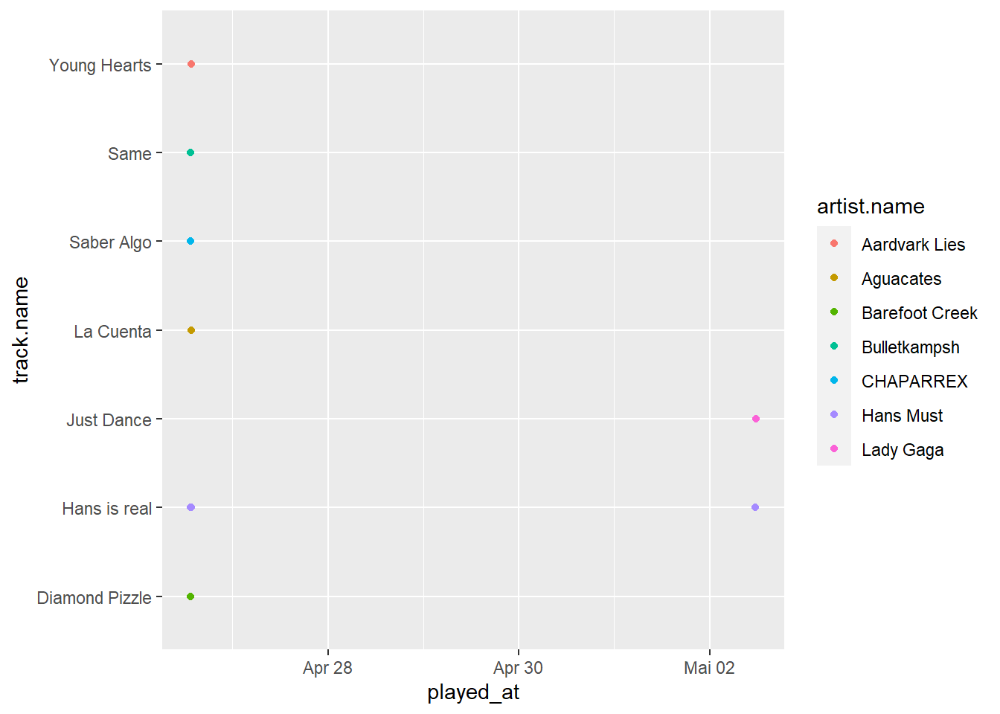

#1 Working with Spotify API
library(lubridate)
library(spotifyr)
library(knitr)
library(tidyverse)
library(ggplot2)
Sys.setenv(SPOTIFY_CLIENT_ID = 'f35cad951d934aa09a2dd473e8a3dd7f')
Sys.setenv(SPOTIFY_CLIENT_SECRET = '2b9ea328c0cc467992f62245e66c5ea3')
access_token <- get_spotify_access_token()
last_played_tbl<-get_my_recently_played(limit = 10) %>%
mutate(artist.name = map_chr(track.artists, function(x) x$name[1]),
played_at = as_datetime(played_at)) %>%
select(track.name, artist.name, track.album.name, played_at) %>%
# kable() #showstable in console
mutate(artist.name)
last_played_tbl##last_played_tbl
##track.name artist.name track.album.name played_at
##1 Hans is real Hans Must Hans is real 2022-04-26 13:40:26
##2 Young Hearts Aardvark Lies Street Life 2022-04-26 13:37:25
##3 La Cuenta Aguacates Verdes 2022-04-26 13:34:57
##4 Same Bulletkampsh Best Deep House, Vol. 1 2022-04-26 13:32:17
##5 Diamond Pizzle Barefoot Creek Sunscapes 2022-04-26 13:31:08
##6 Saber Algo CHAPARREX Movimientos 2022-04-26 13:27:22
##7 Hans is real Hans Must Hans is real 2022-04-26 13:24:27
##8 Hans is real Hans Must Hans is real 2022-04-26 13:23:17
##9 Hans is real Hans Must Hans is real 2022-04-26 13:22:07
last_played_tbl%>%
ggplot(x=played_at, aes(played_at, track.name, colour = artist.name)) +
geom_point()